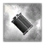

Быстрый разведывательный автомобиль. Способен поддержать пехоту огнем тем самым склонив исход битвы. Способен наносить урон легкой технике и авиации.
Отлично уничтожает снайперов. Незаменим против сильной пехоты, которая не способна дать отпор легкой технике: Штурмовая пехота, Отряд штурмовых саперов, Гвардейцы-десантники, Гвардейский отряд (штурмовой) (Советская армия), Войска второго эшелона, Отряд штурмовых саперов, Стрелки-кавалеристы (Американские войска) Пехотное отделение, Штурмовое пехотное отделение, Офицер-десантник, Коммандос (Британские войска) Требует повышенного контроля, нужно четко понимать какая пехота может уничтожить/повредить автомобиль а какая нет. При появлении легких танков нужно сразу отводить машину в тыл. Хорошо использовать из глубины своей территории для защиты точки, если знаете что вражеский отряд не обладает противотанковыми умениями. Быстро набирает опыт. После первого ветеранства появляется способность обнаруживать вражескую пехоту на миникарте.
Улучшения
Требуется Доступно для командиров |
||
|---|---|---|
|
30
|
Оптические прицелы
Командиры транспортных средств применяют оптические прицелы, чтобы улучшить свои возможности прицеливания за счет увеличения прямой видимости (+30). Работает только когда машина не двигается. |
|
Способности
Требуется Доступно для командиров |
||
|---|---|---|
|
|
Раскрытие маскировки
Особое обучение позволяет обнаруживать скрытые отряды на дальней дистанции в радиусе 20.
|
|
|
10
|
Обнаружение пехоты
Повышенная внимательность экипажа машины позволяет отслеживает пехоту на мини-карте.
|
|
|
 30
|
Танковая тактика
Используйте оборудованные дымососы, чтобы заблокировать линию обзора противника.
|


|
Строится в
Ветеранство
- уменьшается точность стрельбы вражеских юнитов по отряду
- увеличивается точность стрельбы пулемета MG-34
- увеличивается дальность обзора (+15)
- увеличивается точность стрельбы главного орудия, увеличивается точность стрельбы пулемета MG-34
- добавляется дополнительная Прочность (+20)
- увеличивается скорость поворота
- увеличивается максимальная скорость
- увеличивается ускорение / торможение
- увеличивается точность стрельбы главного орудия, увеличивается точность стрел